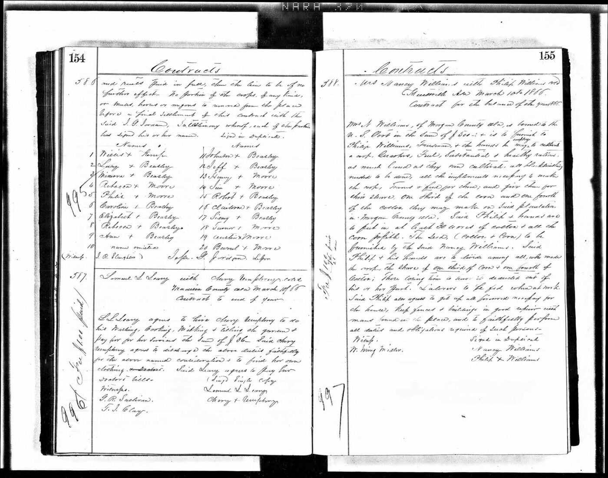

The Contracts: Freedpeople as Principals, 1865–1867
In the fall of 1865, the Freedmen’s Bureau office at Huntsville began copying labor contracts into bound volumes — fair copies, kept as the office’s record of who had agreed to what.
In the fall of 1865, the Freedmen’s Bureau office at Huntsville began copying labor contracts into bound volumes — fair copies, kept as the office’s record of who had agreed to what. Two volumes survive for the Huntsville subdistrict: Volume 1, September 1865 to January 1866, and Volume 2, January 1866 to January 1867. This project has now read both volumes end to end, 416 manuscript images. Most of the contracts in them are wage agreements between a white landowner and named freedpeople. A substantial minority run the other way: the freedperson is the principal — the one renting the land, furnishing the hands, and carrying the risk.
The earliest is from the fall of 1865. E. W. Winston agreed to rent Lew Jones 250 acres for the year 1866. Jones was to furnish eight hands and everything necessary to raise the crop, and to give Winston one third of the crop as rent. The clerk’s memorandum is a few lines long. It does not say where Lew Jones had been the year before, or whose labor he had been. It records the terms on which he began 1866 as a tenant organizing the work of others.
In March 1866 the scale grows. Jefferson Beasley and Johnson Beasley — signing for themselves and their employed hands — contracted with J. J. Jordan for the year 1866. Jordan furnished quarters, fuel, and 5,000 acres five miles west of Huntsville, and bound himself in $1,000. The Beasleys were to deliver eight bales of cotton from the first picking, one hundred barrels of corn, and a third of the fodder, and they pledged their own horses, mules, and wagons as additional security. The roster copied into the volume names twenty people working under the agreement. At position ten, the clerk wrote no name at all. The entry reads: name omitted.
The same month, Marshall Jones contracted as a principal in his own name — the instrument styles him “Marshall Jones, Freeman, with Freedmen.” His party took sixty acres on “the plantation of E. Jones decd” — a dead Jones’s plantation, its owner named only by an initial — and owed a third of the cotton and seed and a third of the corn and fodder. Albert Jackson and William Beasley signed for the laborers, both by mark.

Not every contract is about land. In February 1866, Shandy Jones and his wife Judy Ann contracted with Wm. M. A. Hawkins for fifty acres, the crop to be worked under the direction of Dallas Jones. The contract’s final arrangement is a purchase: Hawkins furnished one bay mare mule, and Shandy and Judy Ann agreed to buy her for $150, paid out of the cotton proceeds. The instrument records the couple as buyers, not only as labor.
Aaron Jones and Tobe Jones bound themselves for $500 with interest, due January 1, 1867, and agreed to deliver a third of their cotton at the Huntsville court-house. Levi Jones worked twenty-three acres of Joel Perkins’s land as the rent on twelve acres of his own.
By January 1867 a Jones appears on the other side of the instrument. Sallie J. Jones, with Geo. P. Landman, leased fifty acres of the Beverly plantation to Henry Scruggs for the year — and the lease exempted Scruggs from any rent “under Contract of Jones with Beverly,” a second, earlier Jones contract that the volume mentions and does not copy. At the system’s other end stands the largest Jones-employer contract in the two volumes: J. Haywood Jones and Paul L. Jones, bound in $5,000, with a roster of 184 numbered laborers. The volumes hold both ends of the same order — freedpeople hiring, renting, and buying, and freedpeople hired by the hundreds — and they record which was which, in the parties’ own names.
The A. P. Jones estate’s 1866 letting program
Alexander P. Jones died in the fall of 1865, and his estate went on doing business. Paul L. Jones administered it as special administrator from November 1865, and the estate’s January 1866 account is a rent roll of its own places: Marshall Jones took the East Place at $170; Dredd Jones the Bradford place at $5; Peterson Jones the King place at $63. The renters were the estate’s former servants. A Huntsville newspaper account of the 1866 renting of the farms belonging to the estate of “Alex Jones, deceased” says it directly — his former servants were the principal renters. The Bureau contracts catch the same program from the other side: in January 1866, the enclosed garden and the west half of the orchard on a tract “belonging to the Estate of Alex Jones Decd,” eight miles west of Huntsville on the Athens Road, were bid off at public outcry and leased to Frank Beasley, a Black tenant, for $30, his term running May 1, 1866 to January 1, 1867. The plantation’s land did not stop being worked when its owner died. It was parceled out, at rent, to people who had worked it enslaved.